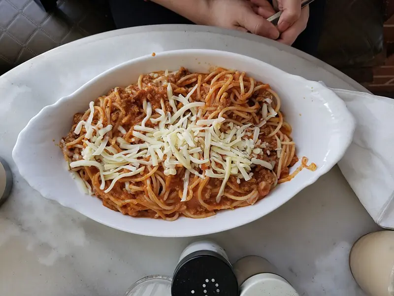

Фото: Andy Li, CC0

Паста болоньезе
Густой мясной соус из фарша, томатов и овощей, томлённый час
100 мин4 порц.788 ккал на порциюБ 35 · Ж 34 · У 82Итальянская кухня
Продукты на 4 порц.
- Говяжий фарш500 г
- Лук репчатый1 шт
- Морковь1 шт
- Сельдерей1 стебель
- Чеснок2 зуб.
- Томаты в собственном соку1 банка
- Томатная паста1 ст. л.
- Молоко0,5 стак.
- Оливковое масло2 ст. л.
- Соль1 ч. л.
- Перец чёрный молотый1 щеп.
- Макароны400 г
- Вода3000 мл
- Пармезан по желанию40 г
Как готовить
- Лук, морковь и сельдерей нарежьте очень мелким кубиком, чеснок порубите.
- Разогрейте масло в глубокой сковороде на среднем огне, обжарьте овощи 8 минут до мягкости.
- Добавьте фарш, разбивайте лопаткой и жарьте 8-10 минут, пока он не станет коричневым и не испарится жидкость.
- Влейте молоко и уварите почти досуха 5 минут, так мясо будет нежнее.
- Добавьте томатную пасту и томаты в собственном соку, посолите и поперчите. Тушите на слабом огне под приоткрытой крышкой 1 час, иногда помешивая. Если густеет слишком быстро, подлейте воды.
- Отварите пасту в подсоленной воде до состояния аль денте, смешайте с соусом и посыпьте пармезаном.
Совет. Соус можно сделать двойной порцией и заморозить. На второй день он даже вкуснее.